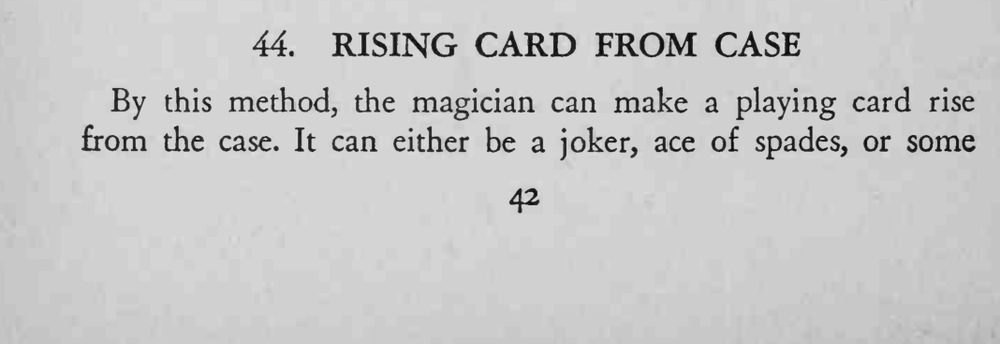
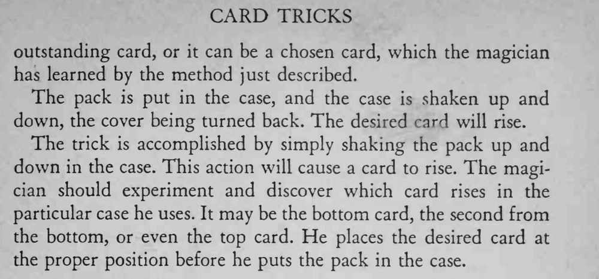

牌装进牌盒后上下摇动，盒盖掀开着，一张指定的牌竟然从盒里慢慢升了起来。
每只牌盒会升起的位置不同，必须先试验再表演。


By this method, the magician can make a playing card rise from the case. It can either be a joker, ace of spades, or some outstanding card, or it can be a chosen card, which the magician has learned by the method just described. The pack is put in the case, and the case is shaken up and down, the cover being turned back. The desired card will rise. The trick is accomplished by simply shaking the pack up and down in the case. This action will cause a card to rise. The magician should experiment and discover which card rises in the particular case he uses. It may be the bottom card, the second from the bottom, or even the top card. He places the desired card at the proper position before he puts the pack in the case.